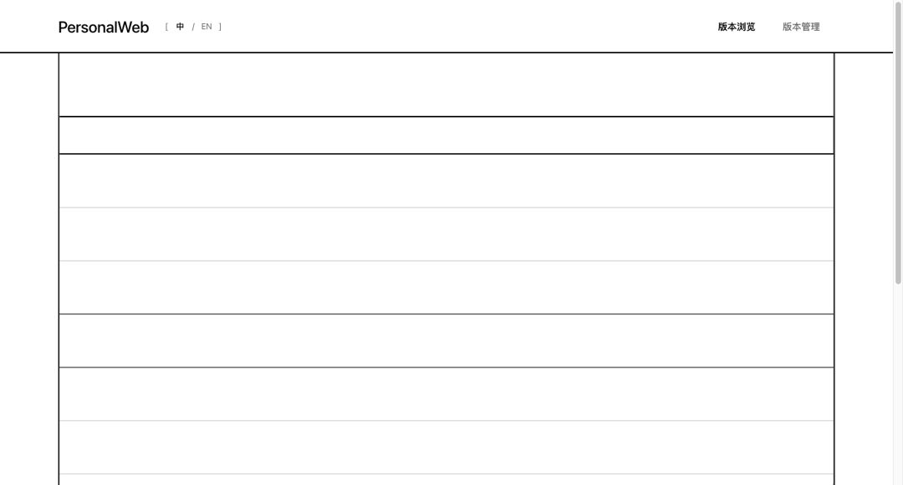
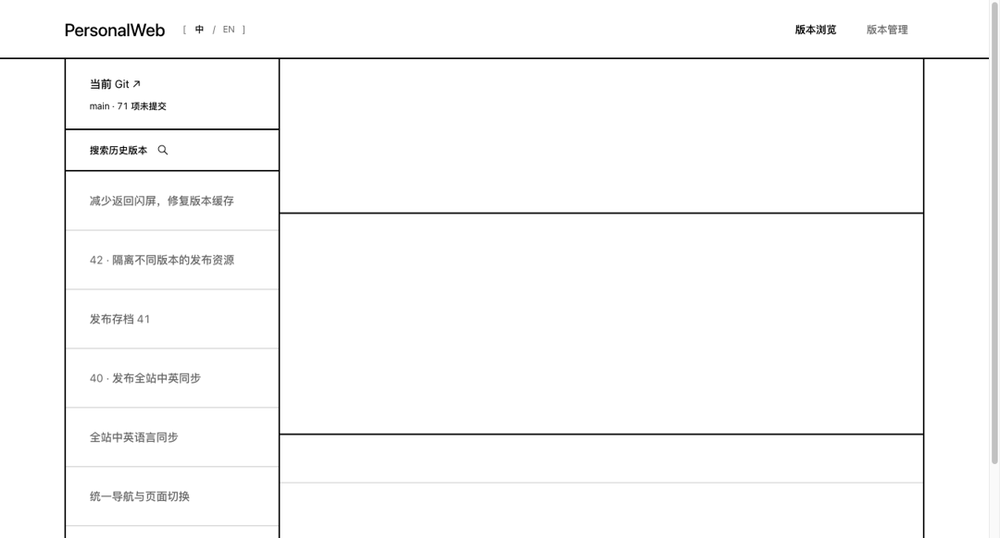
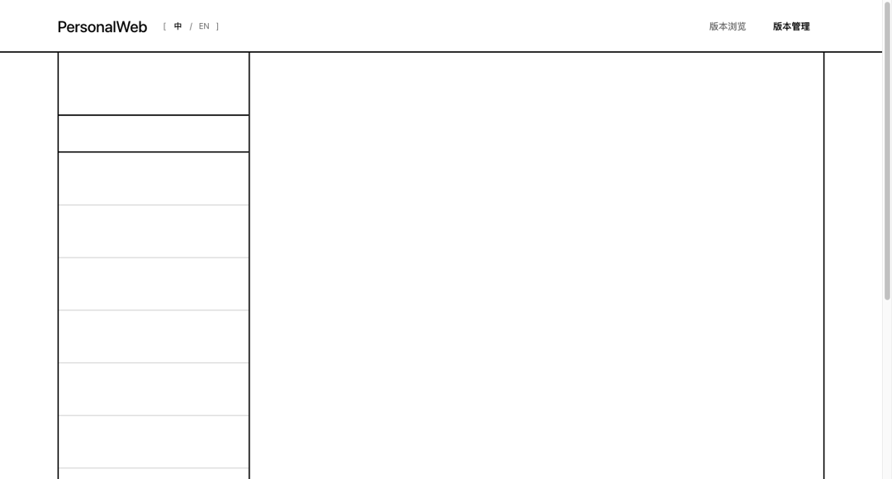
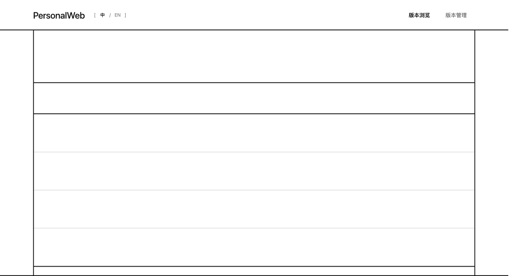

用户已确认 · 冻结基准
白纸、黑线、自然过渡。
保留这一次的排版、VI、交互状态与动画。原项目以后换视觉，仍从这份独立档案复用。
实际页面
冻结页面截图，包含桌面、展开、比较与窄屏。原服务不是查看本档案的前提。
实际动画
620ms 线框运动 → 约 200ms 内容呈现。必要时并入真实边框，保持直接路径。动画片段循环时额外停留以便查看最终状态；运动阶段来自真实时间轴。

目录收拢 → 详情
详情 → 当前 Git
竖线向右 → 并入边框
管理 → 全宽列表预览选项原位展开以后怎么复用
在新项目中调用 $reprise-paper-grid，说明业务内容和技术栈。样式关系、线条层级与动画节奏沿用本档案，项目内容与操作由新项目接入。